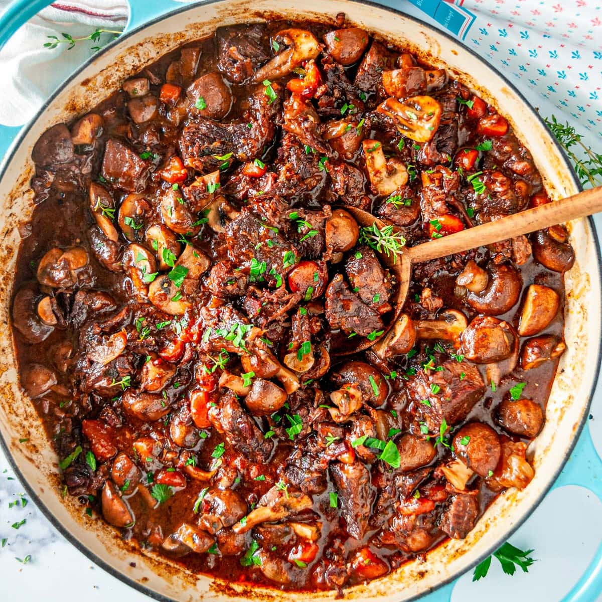

Julia Child's Beef Bourguignon
Ingredients
- 3 lbs beef chuck, cut into cubes
- 2 tbsp olive oil
- 1 onion, chopped
- 2 carrots, chopped
- 4 cloves garlic, minced
- 1 bottle red wine (preferably Burgundy)
- 2 cups beef broth
- 1 bouquet garni (bay leaf, thyme, parsley)
- 2 tbsp butter
- 1 cup mushrooms, sliced
- Salt and pepper
Brown beef in oil.
Add vegetables and garlic.
Pour wine and broth, and simmer.
Finish with butter and mushrooms.